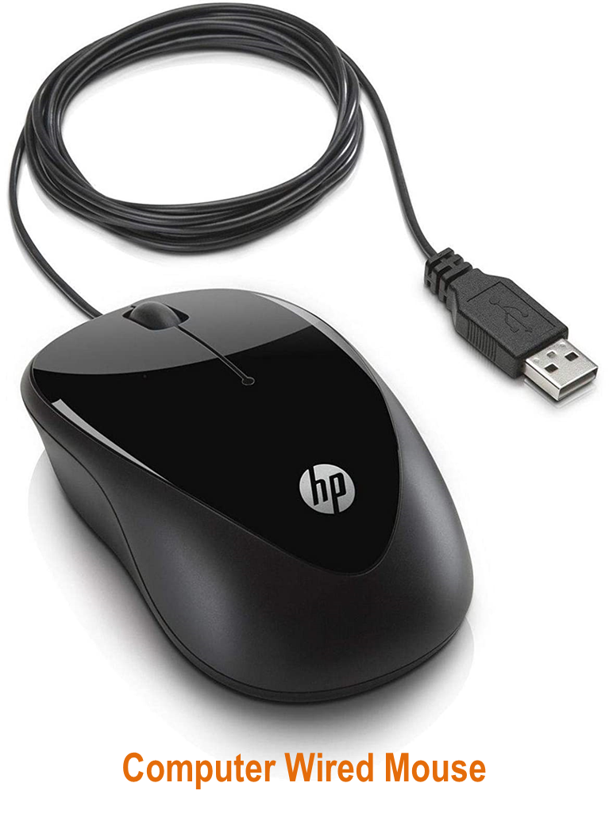
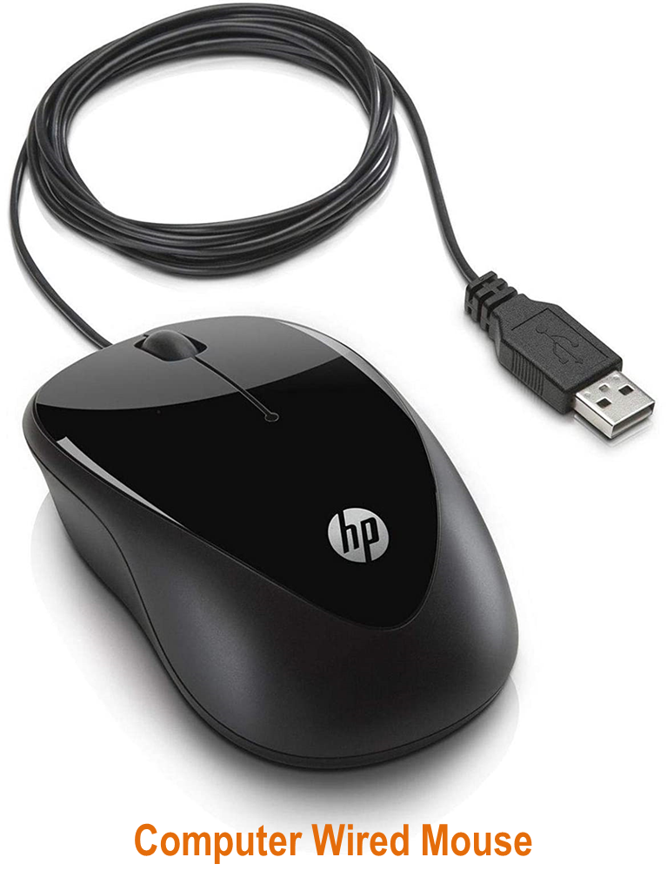
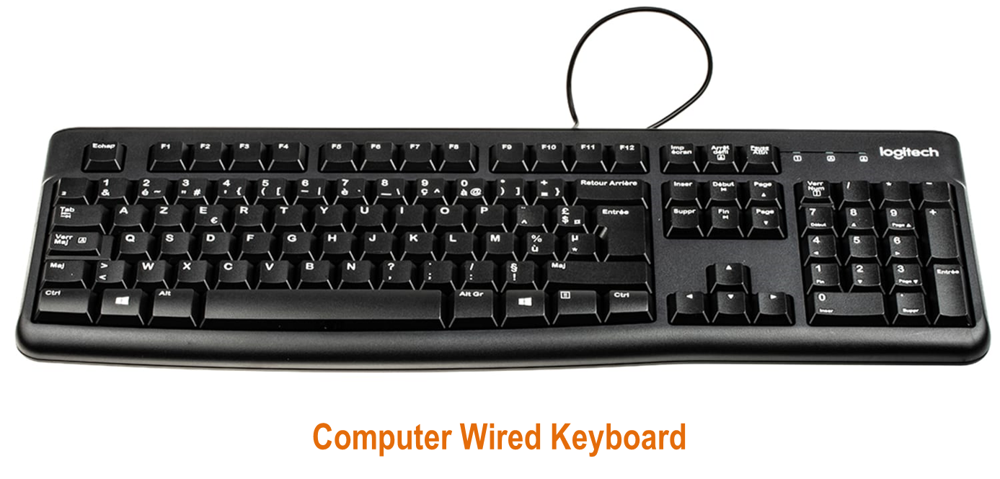
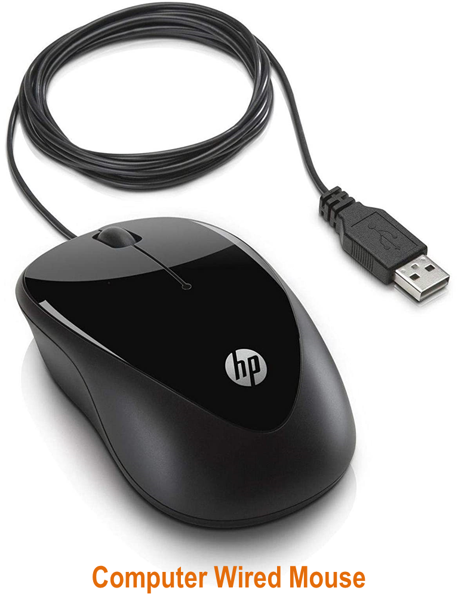
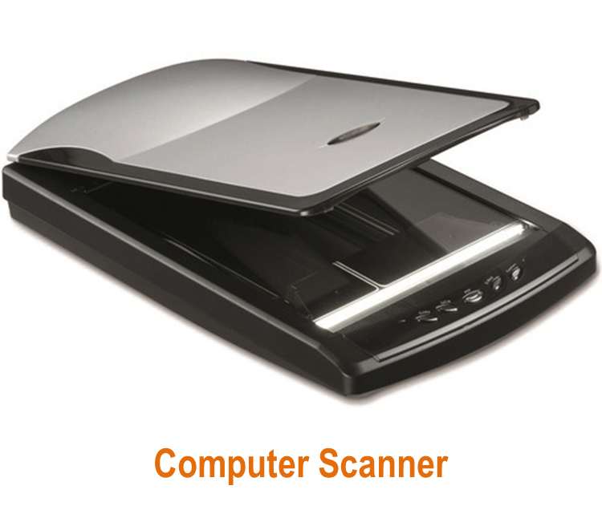

An input device is a piece of equipment used to provide data and control signals to an information processing system such as a computer or information appliance.
Examples of input devices :
We will get to know each of them briefly.

A 'keyboard' is a human interface device which is represented as a layout of buttons. Each button, or key, can be used to either input a linguistic character to a computer, or to call upon a particular function of the computer. It acts as the main text entry interface for most users. Traditional keyboards use spring-based buttons, though newer variations employ virtual keys, or even projected keyboards. It is typewriter like device composed of a matrix of switches. There also happens to be another keyboard that is like an input device for musical instrument which helps to produce sound.
Mouse and touchpads are pointing devices. Pointing devices are the most commonly used input devices today. A pointing device is any human interface device that allows a user to input spatial data to a computer. In the case of mouse and touchpads, this is usually achieved by detecting movement across a physical surface. Analog devices, such as 3D mice, joysticks, or pointing sticks, function by reporting their angle of deflection. Movements of the pointing device are echoed on the screen by movements of the pointer, creating a simple, intuitive way to navigate a computer's graphical user interface (GUI).


Microphone is a voice input device. Voice input devices are used to capture sound. In some cases, an audio output device can be used as an input device, in order to capture produced sound. Audio input devices allow a user to send audio info to a computer for processing, recording, or carrying out commands. Devices such as microphones allow users to speak to the computer in order to record a voice message or navigate software. Aside from recording, audio input devices are also used with speech recognition software.

Scanner is a device that optically scans images, printed text, handwriting or an object and converts it to a digital image. Commonly used in offices are variations of the desktop flatbed scanner where the document is placed on a glass window for scanning. Hand-held scanners, where the device is moved by hand, have evolved from text scanning "wands" to 3D scanners used for industrial design, reverse engineering, test and measurement, orthotics, gaming and other applications. Mechanically driven scanners that move the document are typically used for large-format documents, where a flatbed design would be impractical.